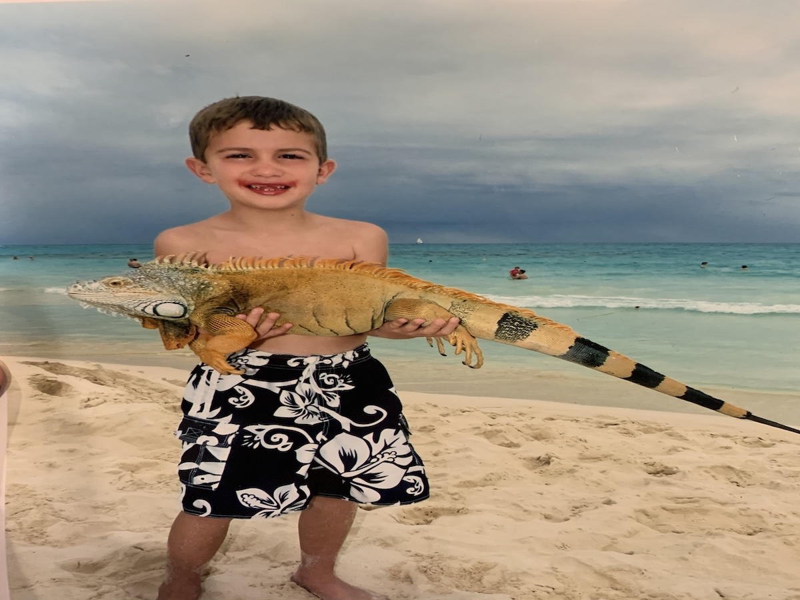
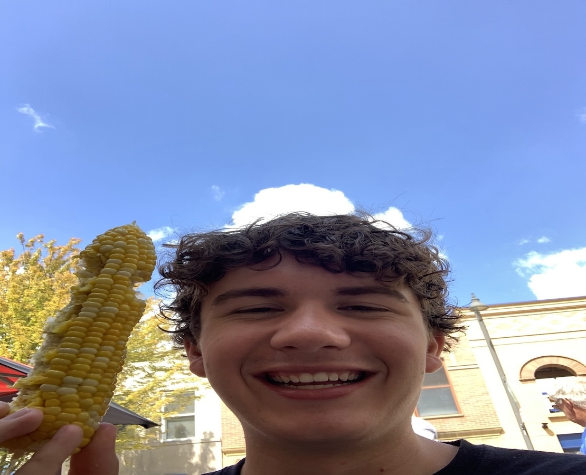

About Me
Growing up in a rural small town smack dab in the middle of Illinois, there weren't that many musical experiences to be had. However, the advancements in smart-phone technology opened my world up to various different genres and music artists. Yet, my true love for music didn't truly come to me until I finally got my driver's license and could listen to whatever I wanted, blasting out loud on my car speakers.At school, I had hoped to flesh-out this newfound musical passion by joining the school band and chorus which taught me to both write, read, sing, and play music even if only in a more classical setting. By the time I reached college, I convinced myself that I should become a band teacher as well since my world view on music was still quite limited in terms of making a career.  But thankfully, that's when I found out about the audio production and design major at my school that would allow me to broaden my horizons to incorporate the kind of music that I originally fell in love with (popular music) into my work and life. I had immediately caught on to all the intricacies of audio with its different principles in creativity, design, production, engineering, and performance of course.  I hope to one day own/create my own studio to help other musician's while also working live sound for a venue in the Nashville Area. It's still so crazy how much progress a small town kid like me has made towards making my pipe dream career path into a reality. Plus, I still have deep love for songwriting and performance so I hope to one day fully produce and release music of my own to show the world exactly of what I am capable of, simply because I love making and sharing my own art with those around me. So with that being said I hope you give me a chance by clicking on over to my gallery page to check out sound of the some of the work that I am proud to call mine!
I hope to one day own/create my own studio to help other musician's while also working live sound for a venue in the Nashville Area. It's still so crazy how much progress a small town kid like me has made towards making my pipe dream career path into a reality. Plus, I still have deep love for songwriting and performance so I hope to one day fully produce and release music of my own to show the world exactly of what I am capable of, simply because I love making and sharing my own art with those around me. So with that being said I hope you give me a chance by clicking on over to my gallery page to check out sound of the some of the work that I am proud to call mine!